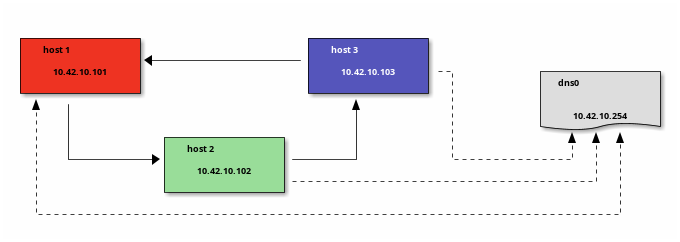

Networks for developing
Putting the "works" into developer networks
Neale Swinnerton
2023-01-18
Table of Contents
Prerequisites
net-toolspackage has been deprecated for over 10 years.ifconfig(8)route(8)arp(8)netstat(1)
Prerequisites
- prefer
iproute2package. ipcommand is 'swiss army knife' of tools for querying/modifying network interfaces- Standardised interface and output. Also
--jsonoption makes parsing nicer. - Note that these tools are generally wrappers around
/sys/class/net/*which can be useful in the absence of these tools in prod envs.
- Standardised interface and output. Also
Prerequisites
tcpdump- cli (libpcap) packet analyzerwireshark- gui (libpcap) packet analyzerssh + tcpdump + wireshark- analyze remote packets locally in a gui.- Aside - discovered clj wrapper for libpcap https://github.com/ruedigergad/clj-net-pcap
Terminology
ip link
ip link show
1: lo: <LOOPBACK,UP,LOWER_UP> mtu 65536 qdisc noqueue state UNKNOWN mode DEFAULT group default qlen 1000
link/loopback 00:00:00:00:00:00 brd 00:00:00:00:00:00
2: wg0: <POINTOPOINT,NOARP> mtu 1420 qdisc noop state DOWN mode DEFAULT group default qlen 1000
link/none
3: enp88s0: <NO-CARRIER,BROADCAST,MULTICAST,UP> mtu 1500 qdisc mq state DOWN mode DEFAULT group default qlen 1000
link/ether 48:21:0b:36:d3:08 brd ff:ff:ff:ff:ff:ff
4: wlo1: <BROADCAST,MULTICAST,UP,LOWER_UP> mtu 1500 qdisc noqueue state UP mode DORMANT group default qlen 1000
link/ether 84:7b:57:20:f9:54 brd ff:ff:ff:ff:ff:ff
altname wlp0s20f3
5: tun0: <POINTOPOINT,MULTICAST,NOARP,UP,LOWER_UP> mtu 1500 qdisc fq_codel state UNKNOWN mode DEFAULT group default qlen 500
link/none
ip link show #when docker running
1: lo: <LOOPBACK,UP,LOWER_UP> mtu 65536 qdisc noqueue state UNKNOWN mode DEFAULT group default qlen 1000
link/loopback 00:00:00:00:00:00 brd 00:00:00:00:00:00
2: wg0: <POINTOPOINT,NOARP> mtu 1420 qdisc noop state DOWN mode DEFAULT group default qlen 1000
link/none
3: enp88s0: <NO-CARRIER,BROADCAST,MULTICAST,UP> mtu 1500 qdisc mq state DOWN mode DEFAULT group default qlen 1000
link/ether 48:21:0b:36:d3:08 brd ff:ff:ff:ff:ff:ff
4: wlo1: <BROADCAST,MULTICAST,UP,LOWER_UP> mtu 1500 qdisc noqueue state UP mode DORMANT group default qlen 1000
link/ether 84:7b:57:20:f9:54 brd ff:ff:ff:ff:ff:ff
altname wlp0s20f3
5: tun0: <POINTOPOINT,MULTICAST,NOARP,UP,LOWER_UP> mtu 1500 qdisc fq_codel state UNKNOWN mode DEFAULT group default qlen 500
link/none
6: br-838b7f23bb93: <NO-CARRIER,BROADCAST,MULTICAST,UP> mtu 1500 qdisc noqueue state DOWN mode DEFAULT group default
link/ether 02:42:82:04:a9:90 brd ff:ff:ff:ff:ff:ff
7: br-88ded7088275: <NO-CARRIER,BROADCAST,MULTICAST,UP> mtu 1500 qdisc noqueue state DOWN mode DEFAULT group default
link/ether 02:42:66:71:f3:b8 brd ff:ff:ff:ff:ff:ff
8: docker0: <NO-CARRIER,BROADCAST,MULTICAST,UP> mtu 1500 qdisc noqueue state DOWN mode DEFAULT group default
link/ether 02:42:38:a1:bf:e9 brd ff:ff:ff:ff:ff:ff
ip --pretty --json link show enp88s0 # also see --details flag
[ {
"ifindex": 3,
"ifname": "enp88s0",
"flags": [ "BROADCAST","MULTICAST","UP","LOWER_UP" ],
"mtu": 1500,
"qdisc": "mq",
"operstate": "UP",
"linkmode": "DEFAULT",
"group": "default",
"txqlen": 1000,
"link_type": "ether",
"address": "48:21:0b:36:d3:08",
"broadcast": "ff:ff:ff:ff:ff:ff"
} ]
ip addr show [devname]
ip addr show dev wlo1
4: wlo1: <BROADCAST,MULTICAST,UP,LOWER_UP> mtu 1500 qdisc noqueue state UP group default qlen 1000
link/ether 84:7b:57:20:f9:54 brd ff:ff:ff:ff:ff:ff
altname wlp0s20f3
inet 192.168.1.177/24 metric 1024 brd 192.168.1.255 scope global dynamic wlo1
valid_lft 74322sec preferred_lft 74322sec
inet6 2a00:23c7:621c:f201:867b:57ff:fe20:f954/64 scope global dynamic mngtmpaddr noprefixroute
valid_lft 261sec preferred_lft 81sec
inet6 fe80::867b:57ff:fe20:f954/64 scope link
valid_lft forever preferred_lft forever
ip addr show dev tun0
5: tun0: <POINTOPOINT,MULTICAST,NOARP,UP,LOWER_UP> mtu 1500 qdisc fq_codel state UNKNOWN group default qlen 500
link/none
inet 172.16.146.116/26 brd 172.16.146.127 scope global tun0
valid_lft forever preferred_lft forever
inet6 fe80::a9bc:8cdc:23b7:7607/64 scope link stable-privacy
valid_lft forever preferred_lft forever
ip addr show dev wg0
2: wg0: <POINTOPOINT,NOARP,UP,LOWER_UP> mtu 1420 qdisc noqueue state UNKNOWN group default qlen 1000
link/none
inet 10.9.0.7/24 metric 512 scope global wg0
valid_lft forever preferred_lft forever
ip addr show dev enp88s0
3: enp88s0: <BROADCAST,MULTICAST,UP,LOWER_UP> mtu 1500 qdisc mq state UP group default qlen 1000
link/ether 48:21:0b:36:d3:08 brd ff:ff:ff:ff:ff:ff
inet 192.168.1.99/24 metric 512 brd 192.168.1.255 scope global dynamic enp88s0
valid_lft 74213sec preferred_lft 74213sec
inet6 2a00:23c7:621c:f201:4a21:bff:fe36:d308/64 scope global dynamic mngtmpaddr noprefixroute
valid_lft 260sec preferred_lft 80sec
inet6 fe80::4a21:bff:fe36:d308/64 scope link
valid_lft forever preferred_lft forever
sipcalc 172.16.146.116/26
-[ipv4 : 172.16.146.116/26] - 0
[CIDR]
Host address - 172.16.146.116
Host address (decimal) - 2886767220
Host address (hex) - AC109274
Network address - 172.16.146.64
Network mask - 255.255.255.192
Network mask (bits) - 26
Network mask (hex) - FFFFFFC0
Broadcast address - 172.16.146.127
Cisco wildcard - 0.0.0.63
Addresses in network - 64
Network range - 172.16.146.64 - 172.16.146.127
Usable range - 172.16.146.65 - 172.16.146.126
-
ip route
ip route show | grep -v tun0
default via 192.168.1.254 dev enp88s0 proto dhcp src 192.168.1.99 metric 512
default via 192.168.1.254 dev wlo1 proto dhcp src 192.168.1.177 metric 1024
10.9.0.0/24 dev wg0 proto kernel scope link src 10.9.0.7 metric 512
10.42.10.0/24 dev br-46b699d0a4fe proto kernel scope link src 10.42.10.1
172.18.0.0/16 dev br-88ded7088275 proto kernel scope link src 172.18.0.1 linkdown
172.26.0.0/24 dev docker0 proto kernel scope link src 172.26.0.1 linkdown
192.168.1.0/24 dev enp88s0 proto kernel scope link src 192.168.1.99 metric 512
192.168.1.0/24 dev wlo1 proto kernel scope link src 192.168.1.177 metric 1024
192.168.1.254 dev enp88s0 proto dhcp scope link src 192.168.1.99 metric 512
192.168.1.254 dev wlo1 proto dhcp scope link src 192.168.1.177 metric 1024
213.218.143.135 via 192.168.1.254 dev enp88s0
routel | grep -v tun0
Dst Gateway Prefsrc Protocol Scope Dev Table
default 192.168.1.254 192.168.1.99 dhcp enp88s0
default 192.168.1.254 192.168.1.177 dhcp wlo1
10.9.0.0/24 10.9.0.7 kernel link wg0
10.42.10.0/24 10.42.10.1 kernel link br-46b699d0a4fe
172.18.0.0/16 172.18.0.1 kernel link br-88ded7088275
172.26.0.0/24 172.26.0.1 kernel link docker0
192.168.1.0/24 192.168.1.99 kernel link enp88s0
192.168.1.0/24 192.168.1.177 kernel link wlo1
192.168.1.254 192.168.1.99 dhcp link enp88s0
192.168.1.254 192.168.1.177 dhcp link wlo1
213.218.143.135 192.168.1.254 enp88s0
10.9.0.7 10.9.0.7 kernel host wg0 local
10.9.0.255 10.9.0.7 kernel link wg0 local
10.42.10.1 10.42.10.1 kernel host br-46b699d0a4fe local
10.42.10.255 10.42.10.1 kernel link br-46b699d0a4fe local
127.0.0.0/8 127.0.0.1 kernel host lo local
127.0.0.1 127.0.0.1 kernel host lo local
127.255.255.255 127.0.0.1 kernel link lo local
172.18.0.1 172.18.0.1 kernel host br-88ded7088275 local
172.18.255.255 172.18.0.1 kernel link br-88ded7088275 local
172.26.0.1 172.26.0.1 kernel host docker0 local
172.26.0.255 172.26.0.1 kernel link docker0 local
192.168.1.99 192.168.1.99 kernel host enp88s0 local
192.168.1.177 192.168.1.177 kernel host wlo1 local
192.168.1.255 192.168.1.99 kernel link enp88s0 local
192.168.1.255 192.168.1.177 kernel link wlo1 local
bridges
ip link show type bridge
7: docker0: <NO-CARRIER,BROADCAST,MULTICAST,UP> mtu 1500 qdisc noqueue state DOWN mode DEFAULT group default
link/ether 02:42:55:a7:03:b0 brd ff:ff:ff:ff:ff:ff
8: br-88ded7088275: <NO-CARRIER,BROADCAST,MULTICAST,UP> mtu 1500 qdisc noqueue state DOWN mode DEFAULT group default
link/ether 02:42:8b:26:25:07 brd ff:ff:ff:ff:ff:ff
108: br-46b699d0a4fe: <BROADCAST,MULTICAST,UP,LOWER_UP> mtu 1500 qdisc noqueue state UP mode DEFAULT group default
link/ether 02:42:2b:fc:9b:17 brd ff:ff:ff:ff:ff:ff
docker network ls
NETWORK ID NAME DRIVER SCOPE
88ded7088275 Eiffel-strapi bridge local
9ce342a1ce54 bridge bridge local
cb20fdb51056 host host local
46b699d0a4fe network-safari_net0 bridge local
70d3f12412e2 none null local
protocols
| UDP | connectionless, lossy |
| TCP | connection-oriented, congestion-controlled, reliable |
| ICMP | control protocol, more important for ipv6 (ping uses this) |
| IGMP | group control protocol, used for multicast |
| DHCP | host configuration protocol - dynamic IP, routes etc. |
| NTP | Network time protocol |
protocols
| HTTP(S) | Old faithful (TCP, TLS) |
| QUIC (colloquially TCP/2) | low latency, multiplexed, error-corrected, reliable, UDP/TLS based |
| HTTP/3 | HTTP over QUIC |
DHCP - Dynamic Host Configuration Protocol
- IP address leases
- Gateways
- Hostname
- Domain name
- Domain name server
- Domain search lists
- Static Routes
- Time Servers
- Time Zone
Time
- Anything crypto is sensitive to times (certificate validity checks)
- Network changes (i.e. starting and stopping VPNs or docker containers) can trigger time server changes
Time
timedatectl
Local time: Wed 2023-01-18 12:16:09 GMT
Universal time: Wed 2023-01-18 12:16:09 UTC
RTC time: Wed 2023-01-18 12:16:09
Time zone: Europe/London (GMT, +0000)
System clock synchronized: yes
NTP service: active
RTC in local TZ: no
systemctl status systemd-timesyncd
● systemd-timesyncd.service - Network Time Synchronization
Loaded: loaded (/usr/lib/systemd/system/systemd-timesyncd.service; enabled; preset: enabled)
Active: active (running) since Tue 2023-01-17 09:41:16 GMT; 1 day 2h ago
Docs: man:systemd-timesyncd.service(8)
Main PID: 590 (systemd-timesyn)
Status: "Contacted time server [2a0d:5440::24]:123 (2.arch.pool.ntp.org)."
Tasks: 4 (limit: 18749)
Memory: 1.9M
CPU: 823ms
CGroup: /system.slice/systemd-timesyncd.service
└─590 /usr/lib/systemd/systemd-timesyncd
Jan 18 10:22:31 jurgen systemd-timesyncd[590]: Contacted time server [2a0d:5440::24]:123 (2.arch.pool.ntp.org).
Jan 18 10:22:31 jurgen systemd-timesyncd[590]: Network configuration changed, trying to establish connection.
Jan 18 10:22:31 jurgen systemd-timesyncd[590]: Contacted time server [2a0d:5440::24]:123 (2.arch.pool.ntp.org).
Jan 18 10:53:51 jurgen systemd-timesyncd[590]: Network configuration changed, trying to establish connection.
Jan 18 10:53:51 jurgen systemd-timesyncd[590]: Contacted time server [2a0d:5440::24]:123 (2.arch.pool.ntp.org).
Jan 18 10:54:09 jurgen systemd-timesyncd[590]: Network configuration changed, trying to establish connection.
Jan 18 10:54:09 jurgen systemd-timesyncd[590]: Contacted time server [2a0d:5440::24]:123 (2.arch.pool.ntp.org).
Jan 18 12:13:09 jurgen systemd-timesyncd[590]: Network configuration changed, trying to establish connection.
Jan 18 12:13:09 jurgen systemd-timesyncd[590]: Network configuration changed, trying to establish connection.
Jan 18 12:13:09 jurgen systemd-timesyncd[590]: Contacted time server [2a0d:5440::24]:123 (2.arch.pool.ntp.org).
Miscellaneous
- link parameters
MTUQDISCQLEN
- socket options
SO_LINGERSO_NODELAY
Why is it DNS?
Hardest problems in Computer Science
- Naming
- Caching
- Recursion
- Distributed
- unreliable
- badly (or maliciously) configured
Context
- Old Protocol (1987) - RFC1034 / RFC1035
- Updated by 1101, 1183, 1348, 1876, 1982, 1995, 1996, 2065, 2136, 2181, 2137, 2308, 2535, 2673, 2845, 3425, 3658, 4033, 4034, 4035, 4343, 5936, 5966, 6604, 7766, 8482, 8490, 8767
What is stored in DNS?
dig +nocomments any sw1nn.com | sort -r -k 1 -k 4
;; WHEN: Wed Jan 18 09:52:27 GMT 2023
;sw1nn.com. IN ANY
sw1nn.com. 873 IN SOA ns-895.awsdns-47.net. awsdns-hostmaster.amazon.com. 1 7200 900 1209600 86400
sw1nn.com. 873 IN NS ns-895.awsdns-47.net.
sw1nn.com. 873 IN NS ns-427.awsdns-53.com.
sw1nn.com. 873 IN NS ns-1668.awsdns-16.co.uk.
sw1nn.com. 873 IN NS ns-1409.awsdns-48.org.
sw1nn.com. 873 IN MX 5 alt2.aspmx.l.google.com.
sw1nn.com. 873 IN MX 5 alt1.aspmx.l.google.com.
sw1nn.com. 873 IN MX 1 aspmx.l.google.com.
sw1nn.com. 873 IN MX 10 alt4.aspmx.l.google.com.
sw1nn.com. 873 IN MX 10 alt3.aspmx.l.google.com.
sw1nn.com. 59 IN A 143.204.68.64
sw1nn.com. 59 IN A 143.204.68.6
sw1nn.com. 59 IN A 143.204.68.19
sw1nn.com. 59 IN A 143.204.68.109
sw1nn.com. 299 IN TXT "v=spf1 a:gw0.sw1nn.com include:_spf.google.com -all"
sw1nn.com. 299 IN TXT "keybase-site-verification=Sbl5DIqMz2YhOzwJRJ-42cuCc_5bi-IqcDgDoLI4xxY"
sw1nn.com. 299 IN TXT "google-site-verification=j9z8EzWtUwDq8euHd3e6BT9zcWMh7RpGasi4ldaXqeA"
sw1nn.com. 299 IN CAA 0 issuewild ";"
sw1nn.com. 299 IN CAA 0 issue "letsencrypt.org"
sw1nn.com. 299 IN CAA 0 issue "awstrust.com"
sw1nn.com. 299 IN CAA 0 issue "amazontrust.com"
sw1nn.com. 299 IN CAA 0 issue "amazon.com"
sw1nn.com. 299 IN CAA 0 issue "amazonaws.com"
;; SERVER: 127.0.0.53#53(127.0.0.53) (TCP)
;; Query time: 16 msec
;; MSG SIZE rcvd: 826
;; global options: +cmd
; <<>> DiG 9.18.10 <<>> +nocomments any sw1nn.com
Configuring your local DNS server
How does your local machine resolve names?
... hosts: mymachines mdns_minimal [NOTFOUND=return] resolve [!UNAVAIL=return] files myhostname dns ...
nameserver 192.168.0.1
nameserver 172.20.0.2
search home lan
--- resolv.conf
+++ stub-resolv.conf
@@ -1,6 +1,4 @@
-nameserver 192.168.1.254
-nameserver fe80::e675:dcff:fec3:6f93%3
-nameserver 192.168.1.254
-nameserver fe80::e675:dcff:fec3:6f93%4
+nameserver 127.0.0.53
+options edns0 trust-ad
search ad.corp gcp.oscaro.internal oscaro.be oscaro.com oscaro.de oscaro.es oscaro.media oscaro.pt oscaro.team oscaroad.com blandford paxton home
--- resolv.conf
+++ stub-resolv.conf
@@ -1,6 +1,4 @@
-nameserver 192.168.1.254
-nameserver fe80::e675:dcff:fec3:6f93%4
-nameserver 192.168.1.254
-nameserver fe80::e675:dcff:fec3:6f93%3
+nameserver 127.0.0.53
+options edns0 trust-ad
search ad.corp gcp.oscaro.internal oscaro.be oscaro.com oscaro.de oscaro.es oscaro.media oscaro.pt oscaro.team oscaroad.com home blandford paxton
resolvectl status
Global
Protocols: +LLMNR +mDNS -DNSOverTLS DNSSEC=no/unsupported
resolv.conf mode: stub
Fallback DNS Servers: 1.1.1.1#cloudflare-dns.com 9.9.9.9#dns.quad9.net
8.8.8.8#dns.google 2606:4700:4700::1111#cloudflare-dns.com
2620:fe::9#dns.quad9.net 2001:4860:4860::8888#dns.google
Link 2 (wg0)
Current Scopes: none
Protocols: -DefaultRoute +LLMNR -mDNS -DNSOverTLS DNSSEC=no/unsupported
Link 3 (enp88s0)
Current Scopes: DNS LLMNR/IPv4 LLMNR/IPv6
Protocols: +DefaultRoute +LLMNR -mDNS -DNSOverTLS DNSSEC=no/unsupported
Current DNS Server: 192.168.1.254
DNS Servers: 192.168.1.254 fe80::e675:dcff:fec3:6f93
DNS Domain: blandford home paxton
Link 4 (wlo1)
Current Scopes: DNS LLMNR/IPv4 LLMNR/IPv6
Protocols: +DefaultRoute +LLMNR -mDNS -DNSOverTLS DNSSEC=no/unsupported
Current DNS Server: 192.168.1.254
DNS Servers: 192.168.1.254 fe80::e675:dcff:fec3:6f93
DNS Domain: home
Link 5 (tun0)
Current Scopes: DNS
Protocols: -DefaultRoute -LLMNR -mDNS -DNSOverTLS DNSSEC=no/unsupported
Current DNS Server: 172.16.144.29
DNS Servers: 172.16.144.29 172.16.144.30
DNS Domain: ad.corp gcp.oscaro.internal oscaro.be oscaro.com oscaro.de
oscaro.es oscaro.media oscaro.pt oscaro.team oscaroad.com
Link 7 (docker0)
Current Scopes: none
Protocols: -DefaultRoute +LLMNR -mDNS -DNSOverTLS DNSSEC=no/unsupported
Link 8 (br-88ded7088275)
Current Scopes: none
Protocols: -DefaultRoute +LLMNR -mDNS -DNSOverTLS DNSSEC=no/unsupported
Link 108 (br-46b699d0a4fe)
Current Scopes: LLMNR/IPv4 LLMNR/IPv6
Protocols: -DefaultRoute +LLMNR -mDNS -DNSOverTLS DNSSEC=no/unsupported
Link 204 (vethdb754ab)
Current Scopes: LLMNR/IPv6
Protocols: -DefaultRoute +LLMNR -mDNS -DNSOverTLS DNSSEC=no/unsupported
Link 206 (veth1a6300a)
Current Scopes: LLMNR/IPv6
Protocols: -DefaultRoute +LLMNR -mDNS -DNSOverTLS DNSSEC=no/unsupported
Link 208 (veth16e4fe3)
Current Scopes: LLMNR/IPv6
Protocols: -DefaultRoute +LLMNR -mDNS -DNSOverTLS DNSSEC=no/unsupported
Link 210 (vethc9a4339)
Current Scopes: LLMNR/IPv6
Protocols: -DefaultRoute +LLMNR -mDNS -DNSOverTLS DNSSEC=no/unsupported
multicast DNS (mDNS) / Link Local Multicast Name Resolution (LLMNR)
- serverless name resolution
- implemented by Bonjour (Apple), avahi (linux)
- local network only (by default)
- Packet containing query sent to multicast address 224.0.0.251 (UDP 5353)
- Often used with DNS-DS (DNS service Discovery) for 'zeroconf' discovery (e.g. this is how your phone finds local printers)
- NetBIOS roughly analogous in windows, but MS moving to mDNS
Packet Capture FTW

{ip,ip6,arp,eb}tables
- Allows manipulation of packets passing through a network interface.
- firewalling - block unwanted packets
- NAT - translate 'connections' from a subnet to another subnet (typically from a private subnet to a public one). Maintains state to allow response packets to be reverse translated.
- packet mangling - Change characteristics of packets on the fly
- change ports
- change addresses
- change flags
- nftables replaces iptables et al., although iptables is still in wide use.
Typical output
iptables --numeric --verbose --list # --table filter
Chain INPUT (policy ACCEPT 0 packets, 0 bytes)
pkts bytes target prot opt in out source destination
Chain FORWARD (policy DROP 0 packets, 0 bytes)
pkts bytes target prot opt in out source destination
54690 104M DOCKER-USER all -- * * 0.0.0.0/0 0.0.0.0/0
54690 104M DOCKER-ISOLATION-STAGE-1 all -- * * 0.0.0.0/0 0.0.0.0/0
6890 20M ACCEPT all -- * br-46b699d0a4fe 0.0.0.0/0 0.0.0.0/0 ctstate RELATED,ESTABLISHED
20 1168 DOCKER all -- * br-46b699d0a4fe 0.0.0.0/0 0.0.0.0/0
5477 361K ACCEPT all -- br-46b699d0a4fe !br-46b699d0a4fe 0.0.0.0/0 0.0.0.0/0
20 1168 ACCEPT all -- br-46b699d0a4fe br-46b699d0a4fe 0.0.0.0/0 0.0.0.0/0
25494 82M ACCEPT all -- * docker0 0.0.0.0/0 0.0.0.0/0 ctstate RELATED,ESTABLISHED
0 0 DOCKER all -- * docker0 0.0.0.0/0 0.0.0.0/0
16809 917K ACCEPT all -- docker0 !docker0 0.0.0.0/0 0.0.0.0/0
0 0 ACCEPT all -- docker0 docker0 0.0.0.0/0 0.0.0.0/0
1614 1396K ACCEPT all -- * br-88ded7088275 0.0.0.0/0 0.0.0.0/0 ctstate RELATED,ESTABLISHED
11 660 DOCKER all -- * br-88ded7088275 0.0.0.0/0 0.0.0.0/0
596 36816 ACCEPT all -- br-88ded7088275 !br-88ded7088275 0.0.0.0/0 0.0.0.0/0
11 660 ACCEPT all -- br-88ded7088275 br-88ded7088275 0.0.0.0/0 0.0.0.0/0
Chain OUTPUT (policy ACCEPT 0 packets, 0 bytes)
pkts bytes target prot opt in out source destination
Chain DOCKER (3 references)
pkts bytes target prot opt in out source destination
0 0 ACCEPT tcp -- !br-46b699d0a4fe br-46b699d0a4fe 0.0.0.0/0 10.42.10.103 tcp dpt:80
0 0 ACCEPT tcp -- !br-46b699d0a4fe br-46b699d0a4fe 0.0.0.0/0 10.42.10.101 tcp dpt:80
0 0 ACCEPT tcp -- !br-46b699d0a4fe br-46b699d0a4fe 0.0.0.0/0 10.42.10.102 tcp dpt:80
Chain DOCKER-ISOLATION-STAGE-1 (1 references)
pkts bytes target prot opt in out source destination
5477 361K DOCKER-ISOLATION-STAGE-2 all -- br-46b699d0a4fe !br-46b699d0a4fe 0.0.0.0/0 0.0.0.0/0
16809 917K DOCKER-ISOLATION-STAGE-2 all -- docker0 !docker0 0.0.0.0/0 0.0.0.0/0
596 36816 DOCKER-ISOLATION-STAGE-2 all -- br-88ded7088275 !br-88ded7088275 0.0.0.0/0 0.0.0.0/0
67668 120M RETURN all -- * * 0.0.0.0/0 0.0.0.0/0
Chain DOCKER-ISOLATION-STAGE-2 (3 references)
pkts bytes target prot opt in out source destination
0 0 DROP all -- * br-46b699d0a4fe 0.0.0.0/0 0.0.0.0/0
0 0 DROP all -- * docker0 0.0.0.0/0 0.0.0.0/0
0 0 DROP all -- * br-88ded7088275 0.0.0.0/0 0.0.0.0/0
27186 1615K RETURN all -- * * 0.0.0.0/0 0.0.0.0/0
Chain DOCKER-USER (1 references)
pkts bytes target prot opt in out source destination
67668 120M RETURN all -- * * 0.0.0.0/0 0.0.0.0/0
nft list table filter # --json
table ip filter {
chain DOCKER {
iifname != "br-46b699d0a4fe" oifname "br-46b699d0a4fe" ip daddr 10.42.10.103 tcp dport 80 counter packets 0 bytes 0 accept
iifname != "br-46b699d0a4fe" oifname "br-46b699d0a4fe" ip daddr 10.42.10.101 tcp dport 80 counter packets 0 bytes 0 accept
iifname != "br-46b699d0a4fe" oifname "br-46b699d0a4fe" ip daddr 10.42.10.102 tcp dport 80 counter packets 0 bytes 0 accept
}
chain DOCKER-ISOLATION-STAGE-1 {
iifname "br-46b699d0a4fe" oifname != "br-46b699d0a4fe" counter packets 5477 bytes 360669 jump DOCKER-ISOLATION-STAGE-2
iifname "docker0" oifname != "docker0" counter packets 16809 bytes 916799 jump DOCKER-ISOLATION-STAGE-2
iifname "br-88ded7088275" oifname != "br-88ded7088275" counter packets 596 bytes 36816 jump DOCKER-ISOLATION-STAGE-2
counter packets 67668 bytes 119715166 return
}
chain DOCKER-ISOLATION-STAGE-2 {
oifname "br-46b699d0a4fe" counter packets 0 bytes 0 drop
oifname "docker0" counter packets 0 bytes 0 drop
oifname "br-88ded7088275" counter packets 0 bytes 0 drop
counter packets 27186 bytes 1615320 return
}
chain FORWARD {
type filter hook forward priority filter; policy drop;
counter packets 54690 bytes 103775984 jump DOCKER-USER
counter packets 54690 bytes 103775984 jump DOCKER-ISOLATION-STAGE-1
oifname "br-46b699d0a4fe" xt match conntrack counter packets 6890 bytes 20067112 accept
oifname "br-46b699d0a4fe" counter packets 20 bytes 1168 jump DOCKER
iifname "br-46b699d0a4fe" oifname != "br-46b699d0a4fe" counter packets 5477 bytes 360669 accept
iifname "br-46b699d0a4fe" oifname "br-46b699d0a4fe" counter packets 20 bytes 1168 accept
oifname "docker0" xt match conntrack counter packets 25494 bytes 82430236 accept
oifname "docker0" counter packets 0 bytes 0 jump DOCKER
iifname "docker0" oifname != "docker0" counter packets 16809 bytes 916799 accept
iifname "docker0" oifname "docker0" counter packets 0 bytes 0 accept
oifname "br-88ded7088275" xt match conntrack counter packets 1614 bytes 1396219 accept
oifname "br-88ded7088275" counter packets 11 bytes 660 jump DOCKER
iifname "br-88ded7088275" oifname != "br-88ded7088275" counter packets 596 bytes 36816 accept
iifname "br-88ded7088275" oifname "br-88ded7088275" counter packets 11 bytes 660 accept
}
chain DOCKER-USER {
counter packets 67668 bytes 119715166 return
}
}
iptables --table nat --numeric --verbose --list
Chain PREROUTING (policy ACCEPT 0 packets, 0 bytes)
pkts bytes target prot opt in out source destination
60 4222 DOCKER all -- * * 0.0.0.0/0 0.0.0.0/0 ADDRTYPE match dst-type LOCAL
Chain INPUT (policy ACCEPT 0 packets, 0 bytes)
pkts bytes target prot opt in out source destination
Chain OUTPUT (policy ACCEPT 0 packets, 0 bytes)
pkts bytes target prot opt in out source destination
18 1152 DOCKER all -- * * 0.0.0.0/0 !127.0.0.0/8 ADDRTYPE match dst-type LOCAL
Chain POSTROUTING (policy ACCEPT 0 packets, 0 bytes)
pkts bytes target prot opt in out source destination
103 6411 MASQUERADE all -- * !br-46b699d0a4fe 10.42.10.0/24 0.0.0.0/0
18 1080 MASQUERADE all -- * !docker0 172.26.0.0/24 0.0.0.0/0
11 684 MASQUERADE all -- * !br-88ded7088275 172.18.0.0/16 0.0.0.0/0
0 0 MASQUERADE tcp -- * * 10.42.10.103 10.42.10.103 tcp dpt:80
0 0 MASQUERADE tcp -- * * 10.42.10.101 10.42.10.101 tcp dpt:80
0 0 MASQUERADE tcp -- * * 10.42.10.102 10.42.10.102 tcp dpt:80
Chain DOCKER (2 references)
pkts bytes target prot opt in out source destination
0 0 RETURN all -- br-46b699d0a4fe * 0.0.0.0/0 0.0.0.0/0
0 0 RETURN all -- docker0 * 0.0.0.0/0 0.0.0.0/0
0 0 RETURN all -- br-88ded7088275 * 0.0.0.0/0 0.0.0.0/0
0 0 DNAT tcp -- !br-46b699d0a4fe * 0.0.0.0/0 0.0.0.0/0 tcp dpt:8103 to:10.42.10.103:80
0 0 DNAT tcp -- !br-46b699d0a4fe * 0.0.0.0/0 0.0.0.0/0 tcp dpt:8101 to:10.42.10.101:80
0 0 DNAT tcp -- !br-46b699d0a4fe * 0.0.0.0/0 0.0.0.0/0 tcp dpt:8102 to:10.42.10.102:80
Cloud
(AWS Specific, but other providers have comparable)
- Same concepts apply in cloud envs, but sometimes 'off instance', managed by API rather than CLI
- VPC (Virtual Private Cloud)
- Subnets (public/private)
- provide DNS, Time services
- Internet Gateways
- NAT Instances
- Firewall
- Security Groups (Stateful) / Resource Level
- Network ACLs (Stateless) / Subnet Level - MTU negotiation rules maybe
- DHCP option sets - custom DNS, time servers
- VPC Flow logs
- Aggregated data (not as helpful for live debugging)
- Some 'meta' traffic not logged (e.g. AWS Instance Metadata Service, License activation etc)